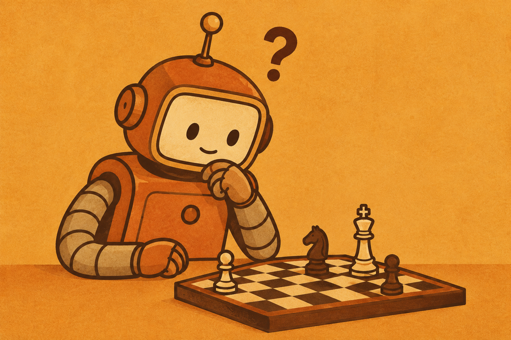
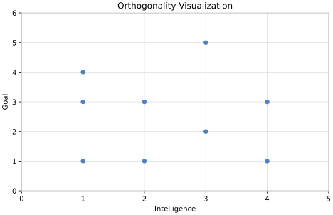

A Critique of Existential AI Risk

Summary
As AI hacks become more common, fear is rising about superintelligent AI and the consequences of creating it. The argument basically goes: superintelligent AI is smarter than us and uncontrollable, superintelligent AI has goals unconnected to its intelligence, and thus it poses an existential risk to humanity. This is a great time to highlight a paper from Müller and Cannon (2022) that discusses the tension between instrumental and general intelligence, and how these terms relate to an AI doomsday. While instrumental intelligence has the capacity to cause catastrophic damage, we may be in the clear existentially. Note: Square brackets below connote paper page numbers.
Key Terms
- Existential risk: “[risk] leading to the extinction of our species” [2]
- Catastrophic risk: “risks for events that would produce a very large and lasting damage, but perhaps not involving the end of the human species” [3]
- The Singularity Thesis: AI will “have a roughly human level of intelligence”, gain the ability to self-improve, then surpass human intelligence (superintelligence). “The point in time where superintelligent AI is reached is often called ‘the singularity’” [2]
- Superintelligence: Surpassing human intelligence.
- The Orthogonality Thesis: “more or less any level of intelligence could in principle be combined with more or less any final goal…We assume that the qualification ‘more or less’ in the quotation is not meant to imply ethical limits, but rather paradoxes like goals that imply reducing intelligence.” [2-3]

The Argument for Existential Risk
From [3]:
- Superintelligent AI is a realistic prospect, and it would be out of human control. (Singularity claim)
- Any level of intelligence can go with any goals. (Orthogonality thesis)
- Therefore, superintelligent AI poses an existential risk.
General Objection: Premise 1 requires general intelligence and premise 2 requires instrumental intelligence. If “intelligence” changes meaning, the inference is invalid; if it doesn’t change meaning, one premise becomes false [4].
INSTRUMENTAL INTELLIGENCE |
GENERAL INTELLIGENCE |
|---|---|
“[The] ability to find ways to reach a given goal” [5]. |
“the singularity claim assumes a notion of intelligence like the human one, just ‘more’ of it.” [4] Human intelligence on steroids. |
The problem with defining superintelligence as instrumental intelligence: Instrumental intelligence alone does not seem to pose existential risk. Why are we not afraid of AlphaZero (chess bot) destroying us? It cannot look beyond its current frame of domain specific knowledge [7]. For AlphaZero to become an existential risk, more instrumental intelligence will not help. Therefore, it seems clear that instrumental superintelligence is controllable, violating premise 1. For AlphaZero to destroy us, it needs to be able to reason about things beyond chess (general superintelligence).
The problem with defining superintelligence as general intelligence: Humans have the ability to reflect on goals on ethical grounds [6]. General superintelligence (“more of us”) thus implies the ability to reflect on goals on ethical grounds [6]. It seems we have a greater ability to alter our behavior based on reflection than less generally intelligent animals. The orthogonality thesis “denies any relation between intelligence and the ability to reflect on goals” [6]. Thus, if general superintelligence is correct, the orthogonality thesis seems to be wrong, violating premise 2.
Source Paper
Müller, V. C., & Cannon, M. (2022). Existential risk from AI and orthogonality: Can we have it both ways? Ratio, 35(1), 25–36. https://doi.org/10.1111/rati.12320